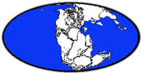
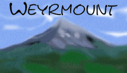

Rachel's Super MOO List
Social MOOs
Go to the start of the list
Please e-mail me with additions, corrections, comments, and suggestions.
updated Tuesday, 19 June 2003
A | B | C | D | E | F | G | H | I | J | K | L | M | N | O | P | Q | R | S | T | U | V | W | X | Y | Z
MOO Listings A-C ||| MOO Listings D-G ||| MOO Listings H-O ||| MOO Listings P-Z
Educational MOOs ||| Foreign Language (ESL) MOOs ||| Miscellaneous MOOs ||| RPG MOOsAfterDark
moo.afterdark.co.il 2020
documentation * web access * Java IRC client
social
[The first Israeli MOO around. Very new and looking for coders.]AlienMOO
24 March 00
moo.upm.edu.ph 7777
social
[It says it is probably only system of its kind in the Philippines. It is run by the UP Manila Intranet. It appears to only have one room.]AnonyMOOs
curtain.dyndns.com 1999 documentation * web interface social
[The theme is continally evolving, but focuses on the out doors. The center point is a bridge under which one first connects.]Anti MOO
anti.woo.net 8888
web interface
social
[They claim to be a "very reliable moo, and smoking fast." The theme is "Theme? Give the people what they want!"]ApocaMOOalypse
31 May 2001
moo.eyetraxx.net 8888
social
[The theme changes because players are allowed to create and implement themes without restriction, so don't be surprised if the name on the screen is different. Their philosophy is: "Do what you want, and don't annoy the other animals unless it is funny." They have MOObucks, awards given for good ideas, good building, and high scores in the games. You can redeem your bucks in the Magic Prize Well, off the Arcade.]AquaMOO
techno.king.net 2345
aqua.king.net 2345
207.71.112.42 2345
206.41.180.16 2345
social
[Tropic island and underwater realm theme. You can have a different form for land and water; explore the possibilities of morphing. Players are encouraged to limit their building to ocean or near ocean areas.]Arkay MOO
moo.arkay.net 7777
social
["The hustle and bustle of a thriving town coaxes you to enter into the happy festivities. The town square is the main center of prosperity, and it goes without saying that people of all persuasions work and play together rather peacefully in this welcoming place. Rumor has it that years and years ago, magical stones played an important part in the building of the town.. a kind of 'mystical' and 'magical' beginning. Some areas are reminders of these times, and some are reminders of hippie happiness. You can almost hear whispers on the wind saying... 'Peace and happiness!' and... 'Let's be happy!' Beautiful beaches line the eastern edge, with clear, cool water that sparkles like tiny stars in the sunlight. This is a place of diversity, with the common thread of friendship binding it all together."]AussieMOO
farrer.riv.csu.edu.au 7777
137.166.77.129 7777
MOOring Member * documentation
social / educational
[An on-line environment designed to facilitate educational needs. It is also used for social interaction. They cater for classes and conferences, as well as a multi-themed public area. They have a very friendly wizardly and administration staff and an excellent interactive tutorial. AussieMOO began on 21 September 1994 as an open-styled, experimental and research MOO for social interaction, conferencing, computer-supported cooperative work (CSCW), lifelong education (beyond just K-Ph.D), object-oriented programming, experimental psychology and philosophy.]Babylon 6
palace.sxpress.com 8888
social
[Formerly Beacon in the Night MOO (BITN MOO) and Beyond The Rim MOO (BTRM), this is a social MOO with a mostly Babylon 5 theme. It takes place aboard the Babylon 6 station. Programmers are welcome.]BayMOO
baymoo.org 8888
64.145.166.254 8888
documentation * Charon's documentation * Simon's documentation
social
[VR of the real and imaginative world of the San Francisco Bay Area. BayMOO is divided into three hubs (The Bay Area, Netspace, Other Worlds), each connected to a central space called the Aquatic Dome. It was founded 1 October 1993. It was formerly run by San Francisco State University. It is very active.]Castle MOO
216.254.69.123 9800
social
[It "is a mythological moo. As you enter this mythological world surrounded by knights and ghosts you will kindly be asked to tour a haunted bus. This bus gives tours 24/7 to all the new castle_ghosts. Our haunted bus will take you room to room in through the world of mythology and evil spirits. An enchanting place where chat and spirits communicate. My fellow wizard staff as well as the spirits of castle moo await you in silence but remind you to be careful as you tour our enchanted moo."]Centre d'Activite et ed Formation Virtuel (CAFV)
core.auteurs-associes.com 7777
documentation * web access
social
[This MOO has a total graphic interface using technologies like Macromedia Flash (for action, manipulating or moving) and JAVA.]The Chiba Sprawl aka ChibaMOO or The Sprawl
sensemedia.net 7777
ginger.lei.net 7777
sapporo.sensemedia.net 9040
ginger.sensemedia.net 7777
sprawl.sensemedia.net 7777
world.sensemedia.net 7777
chiba.picosof.com 7777
moo.picosof.com 7777
204.188.85.3 7777
204.188.85.2 7777
Web access * about the WOO * more about WOOs * The ChibaMOO Papers
social / sci-fi
[Run by Sensemedia, ChibaMOO is the world's First Public Access Web Server and Multi Media MOO. The Sprawl is loosely themed around the cyberscape of William Gibson's Cyberpunk literature. The Sprawl now consists of several thousand rooms and nearly 2000 players and is growing at a rate of 10 players a day. All objects on the Sprawl are accessible via MUD or WWW client, and anyone is welcome to publish their own non-commercial WWW page there.]City MOO
city.moo.ca 1234
MOOring Member * documentation * JAVA interface
social
[It is set in a contemporary city, somewhere on the West Coast of North America.]
(as of 4 January 2001)ComMOOnity
tortie.me.uiuc.edu 4242
documentation * JAVA access * web tour
educational / research / social
[It was started on 5 November 1996. It serves many purposes, including a testbed for research into collaboration technologies, a social gathering place, and a stable, fast environment for the expansion of MOO technologies. They say the best way to understand it is to explore it. Its theme is oriented towards neighborhoods that allow various levels of local control over membership, arrangement, etc. It is hosted by the University of Illinois at Urbana-Champaign.]
CompuCraze MOO
compucraze.net 7777
204.248.54.178 7777
documentation * web access
educational / social
[It is developing and has many wonderful and interesting objects. There are many games, player classes and other things. They are currently in need of Wizards and Programmers so you are invited if you are serious and talented.]
CountryMOO
countrymoo.cmoo.com 5555
country.cmoo.com 5555
moo.cmoo.com 5555
documentation * web tour
social
[It has a country setting. They offer FREE web pages to members! It is a CMOO MOO.]Craggy Island MOO
necro.mcc.ac.uk 7777
maverick.mcc.ac.uk 7777
www.feck.net 7777
130.88.202.49 7777
documentation * JAVA interface * request a character
social
[Formerly NecroMOO. It takes place in 2005 and is based on the British series Father Ted. It offers free web based e-mail with every character requested, be <person name>@feck.net -- avalible through the moo and on the web.]The Crystal Chantry
chantry.virtadpt.net 2422
documentation * JAVA client
social
[It "is primarily a social MOO, though programming and roleplaying are encouraged. There are multiple themes in implementation there (they try for a 'something for everyone' atmosphere), and while it has been around for a while, they have not advertised it heavily."]CubeMOO
wsogmm.dhs.org 7777
social
["It's primarily social/building, no over-all theme yet (other than The loose theme is 'pliable reality' and there are theme areas. There is a gothic fantasy/film-noir section, a generic urban district, stretches of savanah/wilderness, and apparently a whole second city is currently being constructed. There are also some attempts to institute formal roleplaying mechanics, but they've been 'in development' for months now. Only one 'bot character, with *very* limited abilities, but plans are also in effect to develop stationary NPCs. It is very quiet."]CurtainMOO aka Curtains of Time
curtain.dyndns.com 6969
documentation
social
[The goal is to create the past or future world of your dreams -- linked to the rest of the moo via curtains.]CyberVille
capitalnet.com 7777
social
[This MOO is brand new and does not seem to have a theme. The does however have a list of rules which you shoulld be aware of (type help rules. It also has a pirate system.]Dare To Dream MOO
dtdream.cmoo.com 9911
tangerine.cmoo.com 9911
moo.cmoo.com 9911
216.37.163.19 9911
MOOring Member * documentation
social / RPG
[It is a family moo. The theme is fun/fantasy/nostalgia/magical/mystical. It is "very fun and colorful." There is an RPG section installed and growing. Great for teens. I've have never had a friendlier greeting at any MOO! It is a CMOO MOO which opened 13 March 1999.]
as of 26 February 2001Dhalgren MOO
dhalgren.briar.com 7777
a note on the name
social / research
[A small electronic community devoted to interdisciplinary discussion and research, the exploration of connections between art and technology, and the building of long-standing personal relationships. It was originally focused on the exploration and criticism of virtual reality and postmodern science fiction. The theme is inspired by the works of Samuel Delaney, William Burroughs, Philip K. Dick, and others. Set in the nearly abandoned city of Bellona, it is almost isolated from the world by a mysterious catastrophe which continues to distort perception and the laws of physics. It has room classes that provide ambient noise, daytime-dependant descriptions and virtual weather. It was started at Princeton University in 1994.]DiaMOOnd
moo.ml.org 7777
documentation * Web access
social
[A new MOO, with no real theme. The DiaMOOnd project is led by Mathieu Fenniak.]DigitalMOO
hal.utmb.edu 8888
social
[A new MOO with lots of room to grow. Self described as, *quot;No rules... no themes... no guidelines... total and complete anarchy. Take all you can eat, eat all you take."]Doc's MOO
kaschynna.com 8888
206.63.164.9
social
[A social MOO. It has no apparent theme.]Dominions
confabulation.com 2000
confabulation.com 2001 for users of Text to Speech tools and for non-sighed / non-ascii login
social
[There is no specific theme set or enforced, so users are encouraged to devise their own theme for their creations. It has an FO that allows players to translate object descriptions and help msgs into any of several different languages (or setup their own translation DB). Also, there is a room that allows players to type in their language, yet other players see the text in 'their' own language(s).]DoveMOO
tangerine.cmoo.com 7700
dove.cmoo.com 7777
grape.cmoo.com 7777 temporarily down
216.37.163.9 7777
documentation * web version
social
[It "was created as a place of friendship and caring...it is intended as a family atmopshere...sharing with each other in peace and love with avoidance of conflict. The main thing that is asked of you as a player..in fact...EXPECTED..is that you respect ideas, beliefs, and personhood of others....that you put yourself in their shoes and try to understand what life is like for them. The hub of Dove is the PeaceGarden. In addition there are a number of mailing lists, a chanel system, and a Clothing PC so you may role play if you wish." It is a CMOO MOO.]
DownMOO
moo.downmoo.org 8888
social
["Where your core crash is our joy." Started on June 13, 1996 by refugees from Lambda, DownMOO is full of self-described GDFONs (God-Damned Freaks Of Nature). Queerness, perversion, and silliness prevail. Occasional coding and scrabble happen. Many players here have asbestos underwear, but the wizards make no bones about toading trolls.]EdenMOO
avatar.phys-plant.utoledo.edu 4444
131.183.124.59 4444
social
[Striving to be a 'Garden of Eden' where the world can be built as the users wish it to be. It hopes to "provide an atmosphere free of prohibitive policies, politics, and stupid, obnoxious player classes." Run by the University of Toledo.]Eftea MOO aka Entertainment For The Easily Amused MOO
moo.cmoo.com 2261
documentation
social / sci-fi
[The theme is Babylon 5, the planet Dergart, and Arts & Entertainment. It is a CMOO MOO.]Ego MOO
laurence.v-wave.com 7777
documentation
social
[Self described as: "A Charming Little Metropolis on the Cutting Edge of PostModern Pretension." It's layout mirrors a big person, making an extratopological universe of indeterminate size and shape. The ego is inside the head (where one starts), the superego is outside of the head, and the id is the organs. The MOO intends to implement a tiered reality system of objects/rooms; that is, each room will/should have several descriptions for the reality perception of the viewer.]ElderMOO
archipelago.mvp.com 8888
documentation
social / sci-fi
[Time and space are displaced there. It is a planet of islands, called Ea by most of its inhabitants, is now populated by a patchwork of societies from different times and places.]FantasyMOO
raven.concord.edu 7777
documentation
social / sci-fi
[Contains Ravenloft and other science fiction/fantasy worlds. It is part of a Masters project, so you'll be helping with research. Some observation of behavior may occur, but always in public places.]ffaMOO
spam.rh.rit.edu 8888
documentation
social
[A very new and pretty bare MOO. The free-for-all is not a joke. Everyone gets a programmer bit and a big quota - just ask. Need help? You can ask. Otherwise, you're on your own. No theme, although you're welcome to suggest one. It is running off a very fast NT workstation that is unused most of the time, and it seemed like a waste until it was decided to get some kind of server up and running. So here it is.]Forest MOO
avatar.phys-plant.utoledo.edu 8888
131.183.124.59 8888
Web access * Java Interface
social
[Nature theme. Run by the University of Toledo.]FutureMOO
futuremoo.dyns.cx 7777
futuremoo.dyns.cx 8888
moogeluk.student.utwente.nl 7777
moogeluk.student.utwente.nl 8888
documentation * more documentation
ESL / social
[It is a Dutch, fantasy, social MOO. They are working on several planet where players can live. It began in December 1999.]GaltMOO
juana.viper.net.au 7777
203.31.238.30 7777
documentation
social
[Created in February, 2000, this MOO is still very small. There is no apparent theme.]HavenMOO
haven.cmoo.com 8888
social
[Takes place in Zenith, center of intergalactic trade and commerce, capital of culture and technology, headquarters of the four most powerful corporations in the galaxy. The city is 21 million strong, and has 100 million visitors every solar cycle. Self-described as: "Here, your former identity means less than nothing. Here, old crimes are just a fading memory. Here, you have no past but you might have a future... if you're lucky."]
hellyeah! moo
moo.hellyeah.com 7777
description * manually updated ascii map
social
[Self-described as a "virtual hipster ghetto."]
Immaterial Park MOO aka ParkMOO
park.newport.ac.uk 7777
parkmoo.dds.nl 7777
193.63.82.129 7777
documentation
social
[Modeled after a real living and breathing park in the big wide real world. Creativity is encouraged.]Inner Spheres II
social / RPG
whitestar.soark.net 7777
[It is Inner Sphere MOO resurrected. The theme is based on the original mystical D&D magic theme. It is primarily a social MOO, with a RPG element being developed.]InterMOO
intermoo.cmoo.com 4488
social
[Formerly Medieval MOO. It is a "Utopian Community" which promotes creativness, and friendliness. They encourage you to do anyhing that is for the good of the moo and would be considered appropriate, including Porting and programming.]Kids' MOO
kidsmoo.2y.net 8888
documentation * password application form * JAVA interface * web tour
social
[It was created in March 2000 specifically for kids and teenagers. This is a virtual environment for children to gather and meet with friends, old and new, to talk about practically anything or roleplay their characters.]
KrynnMoo
krynn.orisis.net 8888
documentation
social
[It opened on 5 April 2000. It has free character request, and is loosely based on a medieval fantasy theme slightly derived from the world of Krynn. Character names and discussion are not solely limited to that of a medieval nature but requests for rooms, objects and nifty things to do should have the theme in mind.]
LambdaMOO
lambda.moo.mud.org 8888
LambdaMOO Programmer's Manual by Pavel Curtis (technical documentation of programming in MOOCode) * MOOGallery of member pictures * The MOO Gallery of more pictures * LambdaMOO Bash FAQ * LambdaMOO Webring * Rusty's LambdaMOO Web Index * MOO Crew * The Gurst Posse
social
[The first MOO ever! It started in 1991 and has over 6000 members. It is one massive VR party, taking place in a mansion loosely modeled after the creator's home in California. Usually has lots of lag because there are always a lot of people on. Described as "An adventure if you have the patience." It was developed at Xerox PARC (Palo Alto Research Center) by Pavel Curtis.]
LitMUSE
litmuse.cas.usf.edu 8888
documentation * vision and purpose * web access
educational / social
[Hosted by the University of South Florida College of Arts and Sciences, it "hopes to highlight and encourage creative and innovative approaches to the teaching of various text-based studies, such as literature and writing, and foster a hyper-theatrical sense of space. While its primary directive is education, social activities and interactions are equally encouraged."]Little Italy
little.usr.dsi.unimi.it 4444
149.132.130.48 4444
documentation * Home Page in Italian
social / ESL
[Social interaction in Italian. This does not mean that no English is spoken, but the language of choice is Italian. Little Italy e' un "laboratorio vivente" per la realizzazione di una societa' e di una economia digitali e distribuite. Questo laboratorio e' realizzato dal Dipartimento di Scienze dell'Informazione dell'Universita' degli Studi di Milano.]LogMOO
/ educational
ahynes1.homeip.net 7777
documentation * Java Interface * social
[It is primarily aimed at MOO developers, with both social and educational aspects. It is currently exploring Brave New World.]MithrealMOO
sunray.dyndns.com 5400
social / RPG
[Created in July 1999, it has a theme of medieval and magic. It is mostly social, but an RPG is being built. Merlin the ArchWiz writes, "We're a small, new MOO hoping to bring lots of new players to make this MOO one of their homes. As we are a new MOO, I offer special benefits and rewards to builders especially who will build for the public MOO, and some benefits also for public programmers. I am also currently writing a MUD system which will allow for both MOO and MUD (either basically is optional though) for the players. You will not be required to play the MUD, or play the MOO really, except for certain things that might be necessary (I am still developing this, so to say what it will be like is impossible). I hope you will join us, and leave a message to Merlin if you wish to be a public builder/programmer."]MooAtNite
mooatnite.cmoo.com 1999
mooatnite.dhs.org 1999
216.37.163.9 1999
MOOring Member * documentation
social
[Based loosely on a small town in southern New Jersey. It is looking for players, builders and programmers. There is no apparent theme.]
MOO Canada, Eh?
moo.ca 7777
documentation
social
[Late 1998, SchoolNet MOO was renamed and is now being managed privately. It says it "is the largest and best MOO in Canada. It is a live community of about a thousand users who use the MOO environment to socialize, build and program."]MOOkti
noisey.oise.utoronto.ca 9696
documentation * web access * MOOca, the Java based MOO interface * about MOOca
educational / social
[It is intended for social and academic events in the areas of teaching and learning, and is not a virtual classroom or a laboratory. The name comes from the Sandskrit "mukti" meaning a setting or becoming free, release.]MOOlah
kasmud.com 1234
documentation
social
[Currently a Social MOO, but is soon to become an RPG as well. I couldn't find any theme.]MOOphoria
phoria.yeehaw.net 8888
MOOring Member * documentation
social
[You have to love their theme: "Be happy. Let others be happy." It features free ear cleanings for all new players, an arcade, and a variety of interactive games (Scrabble, KaBoom, Card Guppies, Blackjack, etc.).]MOOtown
mootown.dhs.org 1998
shadowforge.net 1998
24.124.36.129 1998
social
[It is a community based on the play Our Town by Thornton Wilder. There are two parts of this typical rural town. The north and west side of town is where you can find socialized activities, games, and interactive rooms. The adult side of town is found on the east and south side of the tracks. Building public areas should be themely, and connected to the town. They promote creativity and friendliness. They encourage you to make things that are unique and for public use. They offer over 35 games, with a different interactive realtime game every night of the week at 9:00 pm cdt.]MooWP
it.uwp.edu 7777
moo.uwp.edu 7777
documentation and web access * more documentation
educational / social
[The educational moo of University of Wisconsin-Parkside. It has a "mildly literary flavor in many sections" and welcomes social players.]MusicWorld
musicworld.dyndns.org 7777
documentation
ESL / social
[MusicWorld is a Dutch social MOO in the theme of Music. It was started in January 2000 and is still being developed.]Nebula MOO
moore-375-37.moore.clarkson.edu 6666
128.153.152.45 6666
social
[Housed by Clarkson University, the general theme is good vs. bad. They are trying to maintain a wizard/player ratio of 1/30 and the wizards are extremely friendly.]
unavaiable as of 3 April 2002NowMOO
nowmoo.dds.nl 2001
nowmoo.dds.nl 9000
194.109.20.8 2001
194.109.20.8 9000
documentation * character request form
ESL / social
[It is mostly in Dutch. Absurdity is the theme of choice, so think strange. It was created in June 1997.]
NullMOO
nullmoo.ath.cx 7777
documentation * web-@who interface
social
[It is a formerly invitation-only communal social MOO for a circle of online friends. This group has inhabited various MOOs and chats in the course of its existence, most recently Speakeasy. Programmer's and builder's bits are almost always available, and hard disk space is practically unlimited. There's a facility to link built areas to a public place, and also somewhere to display information about programmed objects. You must talk to a Wizard for character creation. As with Speakeasy, obscene language is totally allowed, but character abuse and prejudiced hatred is not.]OpalMOO
moo.opal.org 7878
social
[It is considered the second or third oldest public MOO (in dispute with JHM). The theme is described as "Gritty and Sensual". They prefer an abandoned, lived-in feel to everything shiny and new.]Pangaea
pangaeamoo.org 7777
confabulation.com 7777
documentation * further documentation * web access
ESL / social
[It "is dedicated to being a multi-lingual community, with many areas that are especially friendly to specific language speaking people." It is specifically designed for English, Español (Spanish), français (French), Deutsch (German), portugês (Portuguese), italiano (Italian), and Pinyin (Latinized Chinese). There is an on-MOO and off-MOO instant translator in use. It has TTS (text to speech) modifications to make "the MOOing experience more enjoyable for blind persons." The theme is internationalism based on fictional realignment of the earth's continents in the year 2052. Special areas are being developed to accommodate various ethnic groups witht he ambition to blend cultures. The goal is "Fun, Chatting, Learning, Programming, Gaming, and attempting to return to the original purpose of MOOS -- to experiment with 'community' and sense of presence." It opened 21 January 2000. En línea, el texto basó el mundo con el traductor libre de la traducción del lenguaje para los estudiantes, los profesores, y los utilizadores ocultos. Interacción en tiempo real.]Paradise MOO
kamber.cobra.net 8888
131.123.56.158 8888
social
[It is a tropical island. Your small ship brought you there onto their beautiful white sand beaches. They have a beautiful hotel where you can wait to talk to the Wizards, the island is covered in beautiful beaches, scuba diving, sunbathing men and women... What more could you ask for? If your answer is a unicorn, space shuttle, or anything to do with civilization, then you're probably in the wrong place. But if you want a condo on the sea shore, a small tropical jungle hut, or a place to spend hours doing nothing but sunbathing and talking to other sun lovers, then you have come to the right place. If you want to become a builder, talk to one of the Wizards and ask them to give you builder status. They will add your personal rooms to whatever area you would like to live near. Be sure to explore everywhere to make sure you'll be happy where you are. Please make sure that you follow the tropical island getaway theme and please don't put anything there that doesn't belong on a tropical island. Have fun and enjoy yourself!]PlowMOO
waystation.com 7777
198.68.2.28 7777
social
[Does not have a theme as such, aside from a commitment to general weirdness, silliness, and all around wackiness. As long as you build something, and it isn't really annoying, or generally stupid, it's considered in theme.]PoseidonMoo
pnt.arkay.net 8000
social
[It is an underwater themed moo, and is in the making. The archwizard is Goldfishy, his email addy is goldfishy@litmuse.cas.usf.edu. If you need to know more please contact him.]Quest World Adventures
quest.cmoo.com 9999
199.224.73.136 9999
social
[There doesn't seem to be a theme. It is a CMOO MOO.]River MOO
rivermoo.com 8888
documentation * request a character * web connection
social
[Theme wise, this world has only one constant force: the river. Its purpose is socializing and programming. Its primary function is to provide a medium for advancing the uses of HTML as a foundation for communication over the internet. It is home to 1,214 players and 7,253 objects. It is run by the Indiana University Honors Division.]The Real Life MOO (RLMOO)
rlmoo.woo.net 7777
199.237.128.49 7777
documentation
social
[Self described as, "This is not a toy. This is not a game. This is real life. There's no such thing as virtual reality. RLMOO is dedicated to the pursuit of linguistic research, literary creation, and social change. It's the text-based equivalent of a conference call. It is also a new medium for art, education, and communication. Morever, RLMOO is an experiment in anarchist politics." You must be twenty-one or older to connect.]RockMOO
atlas.pingnet.com 7777
social
[They need new programmers and players, as there aren't many now. So stop on by and help them.]RSmoo
RSmoo.cmoo.com 6666
216.37.163.9 6666
social
[It is a social MOO for people who like to program. They are seeking good coders. It was created in July 1999.]Rumba MOO
calvin.univalle.edu.co 8888
200.25.53.30 8888
documentation (in Spanish)
ESL / social
[A Spanish social MOO for the Universidad del Valle - Cali, Colombia.]SCU MOO
scumoo.moo.mud.org 7776
angus.scu.edu.au 7776
documentation * JAVA access
educational / social
[It is a virtual version of Southern Cross University, located in Lismore NSW Australia with a sub-campus in Coffs Harbour NSW Australia. It has no set theme, however they encourage using the MOO for interactive programming, developing an Australian theme (much of what is there is based on the real life version), developing original ideas, as a forum to voice your opinions, and as a place to meet people from around the globe.]The Spinward Marches
spinward.org 8888
documentation
social
[It has a sci-fi milieu which you do not have to adhere to.]
StrangeBrew MOO
social
[A social moo with a twist. It has games, contests and events. It is currently down and being worked on, and should be back up soon.]SyrinxMOO
syrinx.yeehaw.net 2112
social
[The theme is "The Temples of Syrinx", the fictional area as sung about in Rush's masterpiece "2112". In this musical work, the hero lives in a land of opression and grim reality. In this future society of the year 2112 AD, the leaders have taken away most of man's technology, art, etc. Our hero, while walking to the temples one day, unearths a great new wonder. He notes that it has "wires that vibrate, and give music...". This "strange device", or a guitar as it is known to us, caused him to review his opressive existence and seek to break the bonds that held him... a fitting topic in today's networked world. SyrinxMOO is a story about the rediscovery of society, technology, and ourselves... a quest to expand and discover beyond the chains and fetters of authority.]TFN MOO
moo.tfn.net 6666
documentation * web tour * JAVA login
social / educational
[It is the virtual environment of Tallahassee Freenet (TFN), a Florida-based non-profit educational organization. You do not have to be a registered TFN user to participate. It has a near future sci-fi theme. "The moon and several planets have been settled." Coders are encouraged to get in on the ground floor, as it has not been announced to TFN users yet.]University of MOO (U-MOO)
moo.cs.uwindsor.ca 7777
137.207.192.76 7777
documentation
social
[It is run by the School of Computer Science at the University of Windsor. Everyone automatically gets a programmer's bit. It was first intended as a virtual university campus, and is still based on this.]VirtualMOO
sunray.dyndns.com 8080
documentation * web access
social
[Virtual is a great social moo with a huge amount of rooms and, until a few months ago, a huge amount of players. It went downs for 2 or 3 months and alot of players thought it had died. Most of it is set in Sterling City, a fictional city in real life Maine, but there are extensive Medieval and Sci-Fi areas, and a few Adults Only areas, too. While it is a social moo, there is alot of coding and building.]Voyages of the Space Barrel aka VotSB
forum2.org 7777
documentation * no frames documentation
social / research
[Light science-fiction theme. Welcomes builders and programmers. English only. Newbie-friendly. Uses enCore MOO core, including WWW browsing, channels, and PUEBLO enhanced!]Waterpoint
waterpoint.moo.mud.org 8301
documentation
social
[It "takes place on an island called "Waterpoint" somewhere off the eastern coast of North America far enough north to have cold winters and mildly hot summers. The island appears to be abandoned by its former owners." Guest connections are not allowed, so you should start by requesting a character.]Weyrmount II
moo.weyrmount.org 8000
documentation * JAVA access * UltimaDragons mailing list
social
[This is the second incarnation of Weyrmount, the first having been hosted by SenseMedia. It is hosted by The Weyrmount. It is a social MOO for members and fans of Ultima Dragons Internet Chapter (UDIC) [see, also,Ultima Online]. Previously, only members of the UDIC could request characters, but now membership is open to friends too, though they like to stay on theme. The time period is Britannian Year 0365.]The Wiz Club MOO
daak.datafore.com 7777
documentaton
social
[Formerly known as KKMOO and Magic MOO, it is about three years old. It is a place for the Wizards of other MOOs and those who want to learn. "Share your ideas and have fun. Join The Club."]YibMOO
yibmoo.dyndns.org 7777
social
[The physical theme is a "large sprawling mansion, the vacation house of the fabulously wealthy and famously eccentric founder of YibCo, Inc." You are encouraged to add to the mansion. "The secret passageway system is rumored to be one of the finest in the world. Practical infrastructure, though rarely interactive, has a place here. Rooms may overlap one another in space (and often do). Imaginative transitions to places that are 'out of theme' in a strict sense are welcome and encouraged."]
MOO Listings A-C ||| MOO Listings D-G ||| MOO Listings H-O ||| MOO Listings P-Z
Educational MOOs ||| RPG MOOs ||| Miscellaneous MOOs